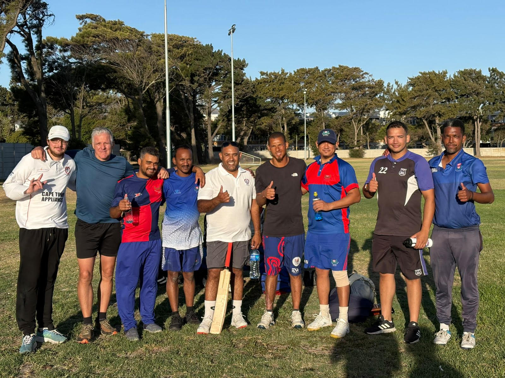
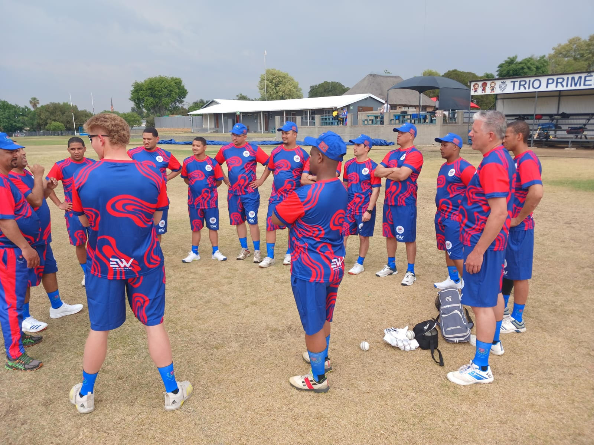

Western Province Deaf Cricket
Breaking Barriers, Building Champions
Promoting and developing deaf cricket by creating inclusive opportunities for participation and excellence

Our Mission
To promote and develop deaf cricket by creating inclusive opportunities for participation and excellence. We are committed to providing deaf and hard-of-hearing athletes with the platform to compete, grow, and represent their region with pride.
Our Vision
To be a leading organisation in deaf cricket, empowering athletes and raising awareness of inclusive sports. We envision a future where every deaf athlete has access to competitive cricket opportunities.
Be Part of Something Special
Whether you're a player, volunteer, coach, or sponsor, there's a place for you in WP Deaf Cricket
Contact Us Today